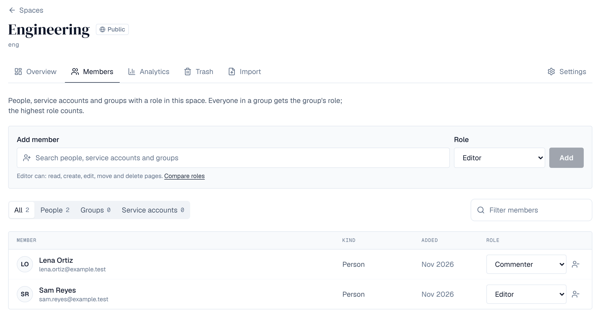

Who can do what in the Wiki is decided in layers. A directory brings in the account, the account's system role decides what it may do across the installation, and space roles decide what it may do in each space. Groups hand out space roles to many people at once. Q&A has its own permissions, from the system role.
1. The layers
Directory Local · Delegated · LDAP · Active Directory · SCIM · Entra ID · Google Workspace
└─ User account one per person
├─ System role Member · Organization admin · Super admin → Settings, Q&A moderation, creating spaces
├─ Groups added by hand, or synced from the directory → carry space roles
└─ Space role Viewer · Commenter · Editor · Admin → one space's pages2. System roles
| System role | Can |
|---|---|
| Member | Sign in, read and write in the spaces their roles allow, read internal spaces of their organization, ask, answer and vote in Q&A, create their own API tokens |
| Organization admin | Also the Settings area for their organization (users, groups, policies, automation), and moderating its Q&A |
| Super admin | Everything: installation settings, licence, storage, backups, plugins, every space, managing labels. Only super admins create spaces |
A directory never grants an admin role: synced and provisioned accounts start as Member; promote people in Settings → Access management → Users. See Users & directories.
3. Space roles

A space role applies to every page in the space. Give it to a person, a group or a service account on the space's Members tab (the space's admins and super admins).
| Space role | Can |
|---|---|
| Viewer | Read pages |
| Commenter | Also comment on pages |
| Editor | Also create, edit, move and delete pages |
| Admin | Also manage members and settings, import pages, and delete the space |
- When someone has several roles in a space (their own and their groups'), the highest one counts.
- Removing a person from Members leaves the roles they have through groups.
- Nothing stops an admin from removing the space's last admin; a super admin can still add one back.
- The Wiki has no per-page restrictions yet: every page of a space is readable by everyone who can read the space. Drafts are seen only by those who edit the space.
4. Visibility
| Visibility | Who reads it | Who writes |
|---|---|---|
| Private | Only members of the space | Members with Editor or Admin |
| Internal | Everyone in the organization who can sign in | Members with Editor or Admin |
| Public | Anyone, even without signing in, while anonymous access is on | Members with Editor or Admin |
A space's admins set its visibility in the space's Settings. Public can be chosen only while anonymous access is on; when it's turned off later, a public space is read only by signed-in people.
5. Q&A
Q&A belongs to the organization, not to a space: everyone in it with the Member or Organization admin role may read, ask, answer and vote; organization admins moderate. See Q&A moderation.
6. Service accounts and tokens
- A service account is a non-human account for integrations. It gets space roles like a person; see OAuth applications.
- An API token never gives more than its owner has. See API tokens.
- Policies can limit what is allowed on top of roles; see Policies.
7. Example: a team's handbook
- Create the space — As a super admin: + Create → Space, visibility Internal, so the whole organization can read it.
- Give the team the pen — On the space's Members tab, add the group Support with Editor.
- Hand over the space — Add the team lead with Admin, so they manage members and settings themselves.
- Let reviewers comment — Add the group Reviewers with Commenter.